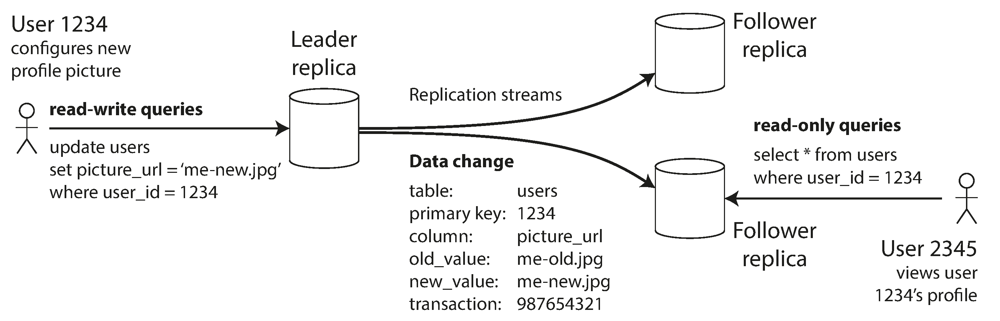
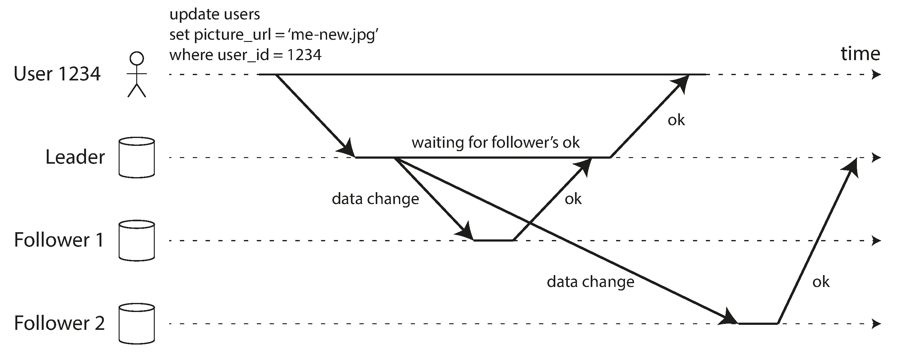
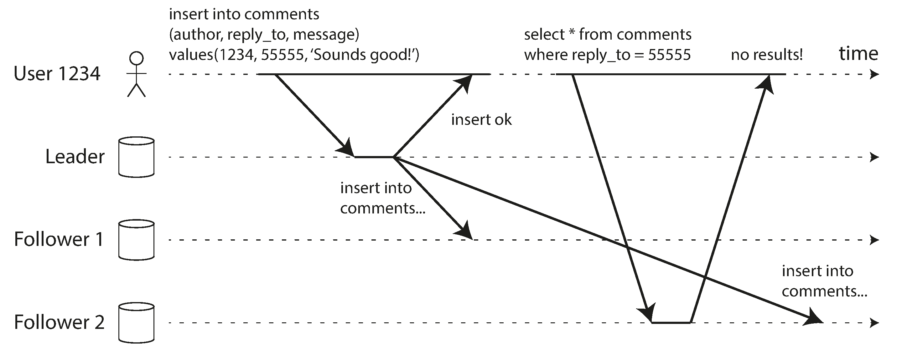
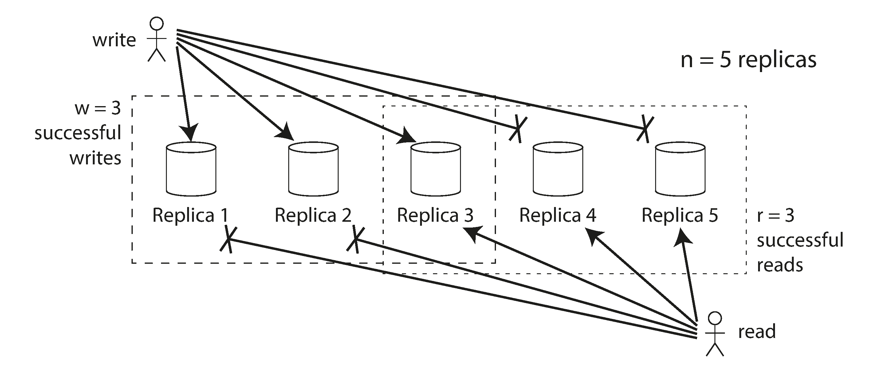

术语表 · 第 6 章 · 课程 6 / 14
复制
复制不是「多存几份」，而是「把同一份数据放在几个会各自失败的地方，然后决定在它们不一致的那段时间里，对使用者承诺什么」。这一章讲的就是这个承诺：写到哪、从哪读、不一致时向谁收敛，以及为此放弃了哪条不变式。
分布式系统里最难的不是让正确的事情发生，而是让错误的事情不要以正确的方式发生。
第 6 章,关于复制延迟与冲突的讨论
6.1三种拓扑：写入落在哪，读从哪来，冲突怎么收敛
先把三个词摆清楚，因为面试里九成的翻车都发生在把「多主」说成「多副本」，或者把「无主」说成「没有主节点所以更简单」。
单主（leader-based / 主从）：客户端所有写入发给唯一领导者，领导者先写自己的本地存储，再把变更流（复制日志、binlog、WAL）按同一顺序推给追随者。读取可以打到任意副本，但追随者返回的可能是旧值。这是 PostgreSQL 流复制、MySQL 主从、MongoDB 副本集、Kafka 分区副本、etcd / TiDB / CockroachDB 的底层做法。写入点唯一，是它全部优点的来源，也是它全部缺点的来源：顺序天然存在，所以不需要版本向量；但写入吞吐被单机封顶，故障切换有一个窗口，且对领导者的慢极其敏感：一个 200ms 的 GC 停顿会被放大成整个写入路径的 p99。
多主（multi-leader）：多个节点都能接受写入，各自再把自己的变更发给别人。每个领导者同时也是别人的追随者。它的存在理由几乎总是地理的：把写入放在离用户近的地区，跨大西洋一次往返 80–100ms，用户能感觉到；或者容忍某个地区整体断网，本地照常写。代价是写入点不再唯一，同一份数据可能被两个地方同时改，于是「冲突」成了必须回答的问题：不是要不要处理，而是处理方式会不会静默丢数据。注意一个常被忽略的等价关系：同步的多主等价于单主，因为写要等所有人都确认，和单主没区别；所以真正有讨论价值的只有异步多主。
无主（leaderless / Dynamo 风格）：没有领导者，客户端（或一个协调者节点）把写入并行发给 n 个副本，读的时候也并行读多个副本，靠版本号或时间戳挑出最新值。Riak、Cassandra、ScyllaDB 是这一类。它没有故障切换这个动作，所以也就没有「切换窗口」和「新主选错」这两类事故；代价是读要自己解决不一致（读修复、提示移交、反熵），以及仲裁参数配错时会静默地读到旧值。这里要顺手纠一个极常见的错误：Amazon DynamoDB 不是 Dynamo 风格，它用 Multi-Paxos 做单主复制；「Dynamo 风格」指的是那篇 2007 年 Dynamo 论文的设计血统。

单主复制：客户端把所有写入发给一个节点（领导者），领导者再把数据变更事件流发送给其他副本（追随者）。读取可以在任意副本上执行，但追随者返回的结果可能陈旧。
多主复制：客户端把每次写入发给多个领导者中的一个，任意领导者都能接受写入。各领导者相互发送数据变更事件流，也会将其发送给追随者。
无主复制：客户端把每次写入发给多个节点，并行读取多个节点，从而发现并修复持有陈旧数据的节点。
把三者压成一张表，评审时按行问就够：
表 6-A 三种复制拓扑的判据（「冲突怎么收敛」一列是选型时最容易被跳过、事后最贵的一列）
| 拓扑 | 写入落点 | 读取来源 | 冲突怎么收敛 | 典型失效 |
|---|---|---|---|---|
| 单主 | 唯一领导者 | 任意副本（可能陈旧） | 不存在写入冲突，只需定序 | 切换窗口丢最近写入；领导者慢拖垮全局 |
| 多主 | 任一领导者 | 本地领导者或追随者 | LWW / 兄弟值 / CRDT | 并发写静默丢更新；自增键与唯一约束失效 |
| 无主 | 并行写 n 个副本中的 w 个 | 并行读 r 个副本取最新 | 版本向量 + 读修复 | 仲裁凑不齐；陈旧副本"复活"覆盖新值 |
6.2同步与异步：一个慢追随者能拖住多少
这一节的全部内容可以用一句话概括：同步复制把「持久」和「可用」放上了同一根杠杆。同步的意思是领导者必须等到追随者确认收到写入，才向客户端报告成功。好处很硬：确认过的写入一定存在于至少两个节点上，领导者猝死也不丢。坏处同样硬：同步追随者一旦不响应，不管是崩溃、网络分区，还是只是被一次大查询卡住，领导者的所有写入都会阻塞，不是变慢，是停住。

所以「全同步」在实践中不成立：n 个副本里任何一个抖动都会拖垮系统。真实配置是三档：
半同步（一个同步 + 其余异步）
保证至少两个节点有最新数据。代价是那个同步副本成为写入路径上的硬依赖：它的 p99 就是你的写入 p99。很多团队把同步副本放在同可用区、异步副本放在跨地区，就是在拿「最多丢一个地区」换「写入不等跨洋往返」。
多数派同步（n 中同步 w 个）
n=5 中同步 3 个。可以容忍 2 个节点失效而写入不中断，代价是写入延迟由「第 3 快」的副本决定，注意不是平均，是分位数。Raft 类系统在这里还多一层：多数派同时是选举门槛，所以可用性直接等于「多数派是否可达」。
全异步则是另一档：领导者不等任何人，写完本地就返回成功。它有一个被低估的优点：即使所有追随者都落后很久，领导者仍然照常接受写入，这正是它广泛用于多副本、跨地域场景的原因。但它有一个必须写在评审文档里的后果：领导者失效且无法恢复时，所有尚未复制出去的写入都会丢失，包括那些已经向客户端返回成功的。「已经 ack 了」和「已经持久了」在异步复制下不是一回事。
同步复制的优点是，追随者保证拥有与领导者一致的最新数据副本。领导者突然失效时，可以确信数据仍可从追随者取得。缺点是，如果同步追随者没有响应——无论因为崩溃、网络故障还是其他原因——写入就无法继续。领导者必须阻塞所有写入，直至同步副本重新可用。
6.3故障切换会丢什么：四类事故
故障切换（failover）在文档里通常是三步：确认领导者失效、选出新领导者、让客户端改指向新主。三步里每一步都有一个能把你送进事故复盘会议的分支。
一、确认失效靠超时，而超时是个猜的数字。 设 30 秒，意味着真实故障至少 30 秒不可写；设 3 秒，意味着一次 JVM 全 GC、一次网络抖动、一次磁盘 fsync 排队就会误判。这类误判在多副本系统里会被放大：新主选出来后旧主其实还活着，两边的客户端各自写入。
二、异步复制下，切换必然丢最近写入。 这是本章最值钱的一句话：新主是从追随者里选的，它没见过旧主最后那批还没复制出去的写入。丢多少取决于复制延迟：平时是几十毫秒的窗口，在负载尖峰、批量导入、副本重建时可能是几分钟。这些丢掉的写入里，有一部分已经对客户端返回过成功。
三、脑裂（split brain）。 两个节点都认为自己是主，都接受写入，数据被双向写坏。防线是 fencing：STONITH（把旧主真的关机）、基于租约（lease）的写入许可、存储层的 epoch 号。它们都可能误杀，所以真实系统里还要配上「被 fence 掉的一方必须拒绝写入」的客户端逻辑，否则 fencing 只是关了一台机器，挡不住一个还在跑的进程。
四、与库外存储不一致。 这是最阴的一类：数据库切了主，缓存、搜索索引、消息队列、下游服务还是旧状态。GitHub 2012 年那次著名事故就是这条链路：一个落后的 MySQL 追随者被提升为主，它的自增计数器也落后，于是新分配的主键与已有记录撞车，MySQL 与 Redis 里同一主键指向了不同用户，私有仓库被展示给了错误的账号。丢写入是数据问题，主键重用是越权问题。
反例
主库在 us-east-1，两个异步追随者在 eu-west-1 和 ap-southeast-1，读请求就近路由。故障切换由编排脚本执行：健康检查连续失败 3 次（每次间隔 5 秒）就把某个追随者提升为主，然后更新 DNS。写入成功以主库本地提交为准。
健康检查失败 15 秒后切换，但复制延迟在批量导入时能到 90 秒，于是新主缺最近 90 秒的写入，其中一部分已经对用户返回「保存成功」。更糟的是 DNS 有 TTL，旧主恢复后仍有客户端在往它写，形成脑裂。而就近读意味着欧洲用户可能读到比他们自己刚写入还旧的数据：「我改了头像，刷新还是旧的」。
改法，按代价从低到高：①把「切换会丢最近 N 秒写入」写进文档并在业务侧做成可对账（写入带幂等键 + 客户端重试可重建），这一步最便宜也最常被跳过；②切换前检查候选副本的复制位点与旧主的差距，超过阈值就拒绝提升，把「丢多少」变成一个有上限的数；③把写入确认改为半同步（至少一个跨可用区副本确认），把丢失窗口从「一个地区」缩到「一次网络往返」；④对读己之写敏感的操作（本人的资料页、刚提交的表单结果页）走主库或带位点校验的读。不要指望「切换做得更快」能解决问题：快只会让丢的数据更多。
6.4复制滞后：三种读保证，各自承诺什么、成本多少、什么时候破
这一节是面试里被追问频率最高的部分，也是最容易答成名词背诵的部分。答题的结构必须是三段：它承诺什么、怎么实现、什么情况下会破。少了第三段，答案就是背的。
读己之写（read-your-writes / read-after-write consistency）
承诺：用户重新加载页面时，总能看到自己提交的更新。注意范围：只对本人，别人的更新仍然可以晚一点出现。这一点正是它便宜的原因：它把「全局一致」换成了「每个用户看到一个不退步的视图」。
实现，四种套路，成本递增：①把「用户可能改过的内容」路由到主库或同步副本（社交网络的个人资料天然适合：只有本人能改）；②记录最近更新时间戳，此后一分钟内的读都走主库，这需要一张会过期的会话元数据；③监控复制延迟，不把查询发给落后超过阈值的副本；④客户端带上自己最近一次写入的逻辑时间戳（LSN 或 binlog 位点），副本不够新就换副本或等它追上。第四种最精确，但要改 API 契约。
什么时候破：跨设备。用户在桌面浏览器改的设置，手机 App 读不到，因为「最近更新时间戳」存在那台设备的本地，另一台设备不知道。要修就得把这份元数据集中保存，并且把同一用户所有设备的请求路由到同一地区（否则「读主库」这句话在不同地区指向不同的主库）。这是评审里最值得问的一句：你的读己之写是按连接、按会话、还是按用户 ID 保证的？

单调读（monotonic reads）
承诺：同一用户顺序执行多次读取时，不会看到时间倒退。读到新值之后，不会再读到更旧的值。它弱于强一致，强于最终一致，仍然可能读到旧值，只是不会「先看到评论，刷新后评论消失」。
实现：让每个用户固定从同一个副本读，比如按 user id 哈希选副本，而不是随机选。成本几乎为零，只是多了一张路由表，以及副本失效时要重新路由（并接受那一刻可能出现一次倒退）。
什么时候破：副本切换、扩缩容导致哈希环变动、或者请求经过多层负载均衡（每一层都可能把同一个用户分到不同后端）。这就是为什么「无状态服务 + 随机负载均衡 + 多副本读」这个看起来最干净的组合，恰恰是单调读最容易被打破的地方。
一致前缀读（consistent prefix reads）
承诺：如果一系列写入按某个顺序发生，任何人读这些写入时也会看到相同的顺序。书里的例子很好记：Poons 先生问「你能看到多远的未来」，Cake 夫人答「大约十秒」。如果问句从一个延迟大的副本读、答句从一个延迟小的副本读，旁观者会先看到答案再看到问题，因果关系被翻转。
实现：①把有因果关系的写入放在同一分片（对话、同一订单的事件流）；②显式跟踪因果依赖（版本向量），读到缺失的前驱就等待或拒绝。第一种便宜但要求你能识别「什么有因果关系」，第二种通用但把复杂度搬进了读路径。
什么时候破：分片数据库几乎必然违反它，因为各分片独立运行、没有全局写序。任何「先写 A 表再写 B 表、读的时候跨表拼装」的设计都在这个坑里：单库单机时不会出问题，一分片就开始偶发。
单调读保证这种异常不会发生。它弱于强一致性，却强于最终一致性。读取数据时仍可能看到旧值；单调读只保证同一用户顺序执行多次读取时，不会看到时间倒退——一旦读到较新的数据，以后就不会再读到更旧的数据。
6.5多主与冲突：LWW 为什么危险
多主的冲突处理有个残酷的层次结构：避免冲突 > 自动合并 > 保留兄弟值让人处理 > LWW。而绝大多数系统默认落在最后一档，因为它只需要一个时间戳字段。
LWW（last write wins，最后写入者胜）的真实语义必须说准：当两次写入真正并发时，时间戳的先后本质上是随机的；LWW 等于随机挑一个赢家，其余静默丢弃，即使它们都在各自的领导者上成功处理过。所以「LWW」不是「保留最新的」，而是「保留碰巧时间戳大的」。
所以，LWW 的真正含义是：同一条记录在不同领导者上并发写入时，随机挑选其中一次作为胜者，其他写入则静默丢弃，即使它们都已在各自的领导者上成功处理。这样固然能让所有副本最终收敛到一致状态，代价却是数据丢失。
它还有第二个坑：时间戳来自实时时钟时，系统对时钟同步极度敏感。一个时钟快 4 秒的节点写过的值，之后任何「真正更晚」的写入都可能带着更小的时间戳被忽略。这不是理论问题：NTP 抖动、虚拟机暂停、容器迁移都会造成秒级偏差，而这类丢数据完全静默：没有报错，没有告警，只有对账时才发现少了一笔。
如果不能用 LWW，往上走两档：保留兄弟值（CouchDB 风格，API 从字符串变成字符串数组，把冲突抛给应用，代价是每个读路径都要处理多值，而且让用户手工合并通常是坏体验）；CRDT（无冲突复制数据类型，给每个字符/元素一个唯一不可变 ID 并记录前驱，合并天然收敛，Riak、Redis Enterprise、Cosmos DB 用它）。CRDT 的边界要诚实地说：它只对「可交换的合并语义」成立：计数器能相加、集合能取并、文本能按字符合并；但「余额不能为负」「用户名唯一」这类不变式，任何自动合并都保证不了，只能靠单主或串行化。图 6-10 那个亚马逊购物车的例子就是这个边界：并集合并让已删除的商品重新出现：合并算法收敛了，业务语义却错了。
6.6无主与仲裁：r + w > n 保证什么、不保证什么
无主复制用两个数字描述一致性：n 个副本、写入需 w 个确认、读取联系 r 个节点。当 w + r > n 时，读集合与写集合必然有交集，所以读到的 r 个副本里至少有一个见过最近一次成功的写入。n=3、w=2、r=2 容忍 1 个节点失效；n=5、w=3、r=3 容忍 2 个。这三个数字是面试高频题，但它们只在一个非常干净的模型里成立。

n，读取的 r 个副本中至少有一个必然见过最近一次成功写入">仲裁的局限，评审时逐条问：
- 写成功了但不够 w 个。 部分副本写成功、总数不足 w，客户端收到失败，但那些成功的副本不会回滚。后续读仍可能读到这次「失败的写入」。
- 新值所在节点失效后从旧副本恢复。 持有新值的副本数掉到 w 以下，交集保证就没了。
- 再平衡期间对「n 个副本是谁」认知不一。 节点 A 认为副本集是 {1,2,3}，节点 B 认为是 {3,4,5}，两边的读写集合可能根本不相交，配置变更时这是真实风险。
- 用实时时钟判新旧。 Cassandra / ScyllaDB 靠时间戳决定哪个值更新，时钟快的节点写过同一键之后，后续写入会被静默丢弃。
- 宽松仲裁（sloppy quorum）。 Riak、Dynamo 在目标副本不可达时写到别的节点（提示移交），Cassandra 的一致性级别 ANY 同理。写入返回成功了，但没有任何保证后续读能看到它。
顺带一个常被误答的性能点：无主的优势不是「更快」，而是「尾延迟更稳」。单主要求所有读打到同一个节点或同一组副本，受单机吞吐封顶；无主可以并行读、并对慢副本做请求对冲（request hedging），p99 明显更好。代价是更大的 r/w 意味着每次请求碰到慢副本的概率更高，以及提示移交带来的后台负载。
6.7「一致性」这个词在这里必须精确
评审文档里写「最终一致」几乎等于没写。这个词在复制语境下至少对应五种不同的东西，而它们失效时的影响面完全不同：
可以说的
「写后读一致性，按用户 ID 保证，跨设备不保证」「单调读，按 user id 哈希固定副本」「w=2, r=2, n=3，容忍单节点失效，不保证跨分区线性一致」「异步复制，故障切换的丢失窗口上限为复制延迟 p99，当前约 200ms」。
不该说的
「强一致」「最终一致」「高可用」「数据不丢」。这四个词每一个都需要一个限定条件才成立：强到什么程度、最终是多久、在几个故障域内、丢的是哪一段。写不出的限定条件，就是你还没想清楚的部分。
面试里怎么答：「我们选单主 + 半同步，一个跨可用区副本同步确认，其余异步。这样确认过的写入至少在两个故障域里，单机宕机不丢；跨地区切换仍可能丢最近一次复制延迟内的写入，实测 p99 约 200 毫秒，所以关键写路径带幂等键，客户端可以安全重试。读侧对本人资料走主库保证读己之写，其余走副本；副本按 user id 哈希固定，保证单调读。多主我们只在离线编辑场景用，冲突用 CRDT 合并文本，但余额和唯一性约束仍然只能在单主上做，因为这两类是不变式，自动合并保证不了。」四句话，覆盖拓扑、持久性、读保证、冲突边界，每一句都带条件。
6.8把这章用在一张架构图上
最后给一套可复用的检查顺序，评审任何一个带复制的设计时按这个顺序问，通常十分钟内就能找到真正的风险点：
表 6-B 复制设计的六个追问，以及答不出来时对应的风险
| 追问 | 答不出来意味着 |
|---|---|
| 写入在哪里算「成功」？是本地 fsync、还是某个副本 ack？ | 你不知道「已确认」的语义，也就无法评估丢数据窗口 |
| 切换时新主如何选定，丢多少写入，这个上限怎么监控？ | 切换是一次盲跳，事后只能靠用户投诉发现问题 |
| 每种读走的副本是谁，读己之写靠什么保证，跨设备怎么办？ | 「我改了怎么没生效」会变成长期工单 |
| 有没有第二写入点（多主、双活、离线队列）？冲突怎么收敛？ | LWW 会静默丢数据，且丢得没有任何痕迹 |
| n / w / r 是多少，为什么是这个数，凑不齐时行为是什么？ | 故障时的行为是未定义的 |
| 与库外存储（缓存、索引、队列）的一致性由谁负责？ | 这就是 GitHub 那次主键重用事故的形状 |
练习判断这是哪种保证
下面五段都是真实系统里会出现的描述。不要先想名字，先问自己：它承诺了什么，破的时候用户看到什么。
A 站订单服务：下单写入主库后立刻返回，前端跳转到订单详情页，详情页固定读主库；订单列表页读从库。DBA 观察到从库延迟偶尔到 8 秒。
详情页读主库、列表页读从库，这是最典型的「按内容路由」实现：只对用户刚改过的那部分保证读己之写。它没保证跨设备，也没保证列表页的单调性——用户可能先在详情页看到订单，再在列表页看不到它，延迟 8 秒时这件事每天都会发生。
B 站内容社区：同一用户的请求按 user id 哈希到固定的读副本，扩缩容时用一致性哈希尽量少搬。副本故障时重路由，接受一次可能的视图回退。
固定副本只解决「同一用户不要在两个副本间跳」，不解决「我刚写的东西在哪」。要顺带拿到读己之写，还得让该副本追上写入位点，或者让写入后的短窗口走主库。
C 站聊天：消息按会话 ID 分片，同一会话的所有消息落在同一分片；跨会话的未读计数由另一个服务异步汇总，前端并行拉取后合并展示。
会话内同分片，所以「问题—回答」的顺序天然保住，这就是一致前缀读最便宜的实现方式：把有因果关系的写入放进同一个写序。跨会话的未读计数则没有这个保证，可能出现「消息已显示但未读数还是 0」——这是设计上接受的，不是 bug，但要写进文档。
D 站跨区双活：上海和法兰克福都能写，用户资料表用「时间戳大的赢」，时间戳取各节点本地时钟，NTP 同步周期 64 秒。
64 秒的 NTP 周期意味着节点间时钟偏差可达秒级，而并发写入的时间戳比较本质上是在随机挑赢家。用户改完资料看到旧值还只是体验问题；如果这张表上还有「余额」「配额」「状态机」字段，丢的就是数据。正确说法是：这张表只能放「可被覆盖的展示型字段」。
E 站对象存储元数据：n=3，写要求 2 个副本确认，读联系 2 个副本，用版本号取最新；节点下线期间写请求被转发到临时节点并标记提示移交。
w+r>n 的交集只在「读写的副本集合是同一个 n」时成立。提示移交把写入放到了副本集之外的临时节点，返回成功但后续读不一定碰得到它——写入的持久性被降级为「等移交完成」。这是 Dynamo 论文里明确的取舍，评审时必须写出来。
一个团队把 MySQL 主从改成半同步（一个同可用区副本同步确认），目的是「故障切换不丢数据」。以下哪项是他们实际获得、且可以写进文档的保证？
设计评审上，有人提议把用户账户表从单主改成两地多主，理由是「降低写入延迟、容忍地区故障」。请给出你的判断，并写出你会要求对方补充的三条材料。
提示：账户表上有哪些字段是不变式，哪些只是展示？「冲突解决」在这张表上意味着什么？
结论先说：可以谈，但先要证明「账户表的写入延迟真的是用户痛点」。绝大多数账户系统的写 QPS 极低（登录、改密码、改设置），跨区一次往返 100ms 在这个频率下几乎无人感知；而多主带来的冲突处理成本是持续性的。这是典型的「用永久复杂度换一次性体验」。
三条材料：①字段分级清单——哪些字段是展示型（昵称、头像、偏好，可 LWW），哪些是带不变式的（余额、配额、登录失败计数、邮箱唯一性）。后一类在多主下无解，必须留在单主的「权威区」，这决定了多主最多只能覆盖半张表。②冲突解决的具体算法与它的失败模式——如果答「用时间戳取最新」，就要追问时钟同步方案与最大偏差；如果答「保留兄弟值」，就要追问哪个界面、谁来处理、积压了怎么办。③切换与脑裂的处置——两地网络断开时，两边都继续写还是有一边降级为只读？降级由谁判定、多久生效？这一条答不出来，多主就等于「分区时自动产生两份不一致的真相」。
如果非做不可：把多主限制在「可被覆盖的展示型字段 + 明确可合并的结构（如集合、计数器）」，权威字段（余额、凭证、唯一键）保持单主写入；读取侧接受「自己的改名可能几秒后才在自己这边生效」，并用读己之写路由兜住最刺眼的部分。这样你拿到的是「写入延迟下降」，付出的是「两套写入路径 + 一套合并逻辑 + 一份字段分级文档」——这笔账值不值，取决于写 QPS，而它通常比想象中低两个数量级。
诚实的补充：如果真实痛点是「地区故障时不能登录」，那要解的其实是认证的可用性（多地域只读副本 + 缓存凭证），不是账户表的写入拓扑。这两个问题经常被混为一谈，而后者便宜一个数量级。
贴进评审文档的话：本系统采用单主复制，写入以「主库本地提交 + 一个跨可用区副本确认」为成功判据，因此确认过的写入在单节点故障下不丢失；跨地区故障切换的丢失窗口上限等于复制延迟 p99（当前约 200 毫秒），关键写路径均带幂等键以支持安全重试。读侧承诺：对本人刚写入的资源保证读己之写（按内容路由到主库），其余读取按 user id 哈希固定副本以保证单调读；不承诺跨设备读己之写，也不承诺一致前缀读。已知放弃的保证：地区级故障期间写入不可用；多主仅在离线草稿场景启用，冲突用 CRDT 合并，账户余额与唯一性约束不在此列。
一手资源
第 6 章 复制（中文全译） — 值得对照读的是「复制延迟的问题」到「一致前缀读」这三节，以及「处理写入冲突」整段；前者是面试追问问到底的地方，后者能把 LWW 的代价讲成具体数字而不是形容词。也可以在 Vonng/ddia 仓库里看译注与勘误。
随时问我
把你手上那张复制架构图（或者一段「主从 + 缓存 + 搜索索引」的拓扑描述）贴给我，再告诉我写入成功的判据是什么。我帮你标出：切换时会丢哪一段、哪些读会看到时间倒退、以及哪张表其实不该放在多主上。通常不超过三处。